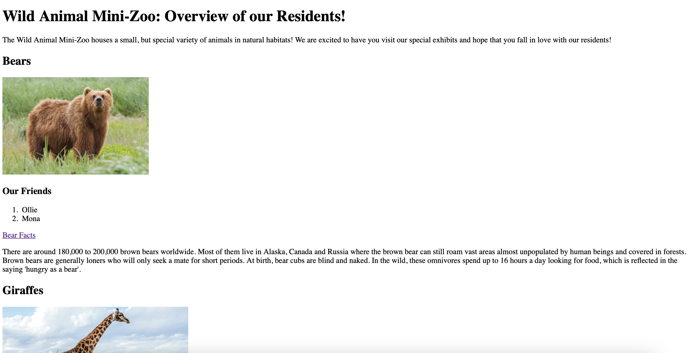

The Zoo Problem
The Zoo Problem project helps new zookeeper interns get acquainted with zoo animals at the Wild Animal Mini-Zoo as part of their onboarding process. My team has included each animal type, resident names, animal facts, and general description that interns can refer back to as they are trained for their summer internship. This project showcases use of HTML.
My Grocery List
The online Grocery List is meant to help users create, view, and modify their grocery lists online for ease of access. Users will cease to lose or forget their paper grocery lists in favor of the new online list! Users can create sections based on food type and organize their lists as they prefer. This project showcases use of HTML and CSS.

Steven's Book Shop
Steven's Book Shop is a project I created for a client to create an online bookstore application for his small business. Users can navigate through featured books to read a description and submit feedback based on their experience with the application.